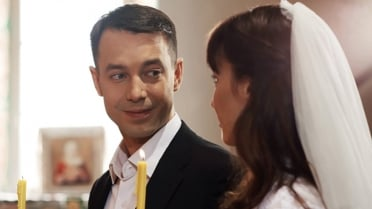
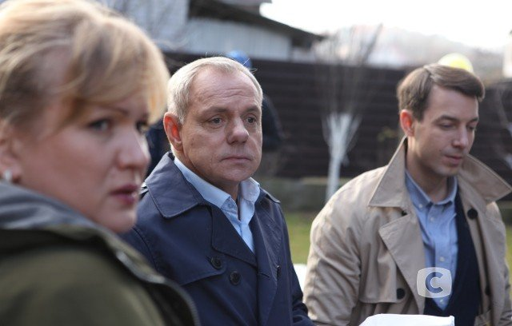

Мой любимый сериал
Как говорится, о вкусах не спорят, и я согласна с этим утверждением. Это касается всего: друзей, книг, еды, одежды, спорта. Говоря о предпочтениях в кино, понятно, что в данное время киноновинки изобилуют невероятными спецэффектами, сценами с применением пиротехники и высоких технологий.
Мне нравится смотреть русские мелодрамы.
В центре сюжета – история любви длиною в жизнь, которая прошла через множество испытаний…
Жанна и Роман с детства любят друг друга, но их мечты о свадьбе рушатся, когда парня обвиняют в убийстве лучшей подруги Жанны – Кати. Его подставляет отец Жанны – майор милиции Валерий, которому не нужен несостоятельный зять. Узнав, что Романа хотят убить на зоне, Жанна идет на сделку с местным бизнесменом, криминальным авторитетом Славой Карповым. Она соглашается на фиктивный брак с самолюбивым Славой, и в обмен Рома получает защиту и особые условия содержания в тюрьме. Узнав о свадьбе Жанны, парень в отместку женится на другой. Проходят годы. Роман и Жанна учатся жить без любви, но судьба вновь сводит их…Только теперь хладнокровный, циничный Рома искренне считает бывшую невесту предательницей, не подозревая, что все эти годы она его ждала…
Евгения Нохрина
Евгения Нохрина – известная актриса театра и кино. Наибольшую популярность получила после съемок в картинах «Надежда» и «Черная кровь».
Мир искусства так же непостоянен, как и сама жизнь. На смену уходящим поколениям актеров приходят новые – молодые, талантливые, амбициозные. Одной из таких подающих надежды артистов можно смело назвать Евгению Нохрину, молодую актрису, не так давно получившую актерскую профессию, но уж имеющую достаточно приличный послужной список. В жизни ей везло – на учителей, партнеров по сцене и съемочной площадке, на знаковые роли. Евгения предпочитает играть сильных духом женщин, оптимистически смотрящих в будущее. Каждая ее героиня – это отдельная история, актриса играет так проникновенно, что запоминается зрителю навсегда.
Дмитрий Блажко

Сниматься в кино Дмитрий Блажко начал, еще будучи студентом театральной академии. Впервые молодой человек появился перед кинокамерой в роли матроса Ганса, служащего на немецкой подводной лодке в военной мелодраме «Когда растаял снег». Затем были криминальная лента «Опергруппа», фантастика «Цвет пламени» и мелодрама «Слово женщине». Также начинающий актер успел поучаствовать в таких популярных сериалах, как «Папины дочки», «Интерны», «След» и «Реальные пацаны».
Олеся Жураковская
Олеся Жураковская – известная украинская телеведущая, актриса. Ее карьера на телевидение началась с 2012 года, Олеся ведет на украинском канале «СТБ» реалити-шоу «Взвешенные и счастливые». Актриса приобрела большую популярность после выхода на экраны фильмов «За двумя зайцами» и «Сваты».
Александр Мохов
Александр Мохов – заслуженный артист России, режиссёр театра и кино, стал знаменит благодаря роли зэка «Абрашки» в фильме «Беспредел» и участию во многих театральных постановках студии Олега Табакова.
Алексей Зубков
Алексей Зубков — известный украинский актер, которого с удовольствием приглашают на съемки и украинские и российские режиссеры. Прославился после выхода остросюжетного сериала «Прииск».
Его дорога к славе не была прямой и проторенной. Алексей Зубков много прошел и испытал, прежде чем осознал, что настоящее его призвание – кино и театр. Любовь зрителей он завоевал благодаря своему таланту, помноженному на кропотливый труд.
Ирина Мохова
Ирина Мохова прославилась на родине еще в детстве, выступая на сцене с песнями и выпуская музыкальные клипы. В юности артистка увлеклась кино и посвятила актерской профессии карьеру, а также благодаря съемкам обрела семейное счастье.
Анна Бачалова
Анна Бачалова — актриса российского кинематографа, успевшая запомниться зрителям яркими ролями. Среди ее работ есть фильмы разного жанра. Артистка не боится экспериментировать, представать перед зрителями в смелых, откровенных образах. Сейчас фильмография Бачаловой пополняется новыми проектами.
Матвей Зубалевич
Матвей Зубалевич — российский актер, хорошо известный телезрителям по участию в съемках молодежных сериалов. Фильмография артиста ежегодно пополняется несколькими проектами, в которых ему чаще всего достаются роли отрицательных персонажей. По словам исполнителя, он уже давно смирился с тем фактом, что продюсеры видят в нем в основном подлецов и хулиганов. Но Зубалевич не теряет надежды попробовать себя в другом образе.